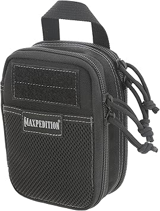
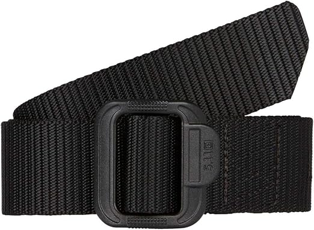
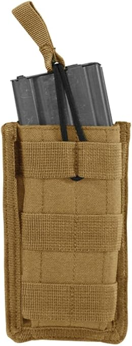
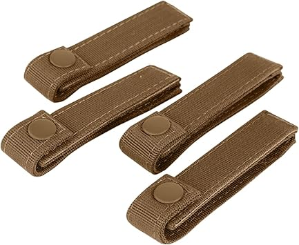

← mollestraps.com
Mollestraps Explained: 2026 Edition
May 2026
The mollestraps market in 2026 looks nothing like it did a year ago. New brands, better tech, and more competitive pricing across the board.
Quick Tips Before You Buy
- The Q&A section on mollestraps listings often answers questions that no review covers.
- The 3-star reviews are gold. They're usually the most balanced and honest takes on mollestraps.
What We Recommend



→ Amazon — Great value

What It Comes Down To
Good mollestraps don't have to be complicated or expensive. Check our updated picks and buy with confidence.
Affiliate Disclosure: As an Amazon Associate, we earn from qualifying purchases. This doesn't affect our recommendations.